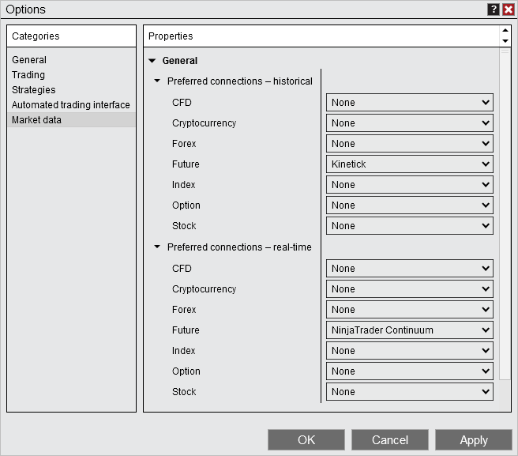

|
<< Click to Display Table of Contents >> Multiple Connections |


|
Multiple Connections
|
<< Click to Display Table of Contents >> Multiple Connections |
|
Multiple ConnectionsNinjaTrader supports multiple simultaneous connections to different connectivity providers, and in some cases, to the same connectivity provider allowing you to:
•Connect to and trade through multiple brokers simultaneously •Connect to your broker and a separate data provider simultaneously
NinjaTrader will use a data feed for real-time or historical data, and by default will subscribe based on the type of instrument supported by the data feed connection and your connection order. |
 Determining which data source is being used
Determining which data source is being used
Determining which data source is being usedWhen connecting to multiple connections, you must choose which provider will be supplying your real-time and historical data in NinjaTrader.
By default NinjaTrader will attempt to get real-time and historical data from the first connected data provider for the instrument type for which you are attempting to receive data.
The instrument types used for lookup are as follows, for determining which data feed supports which instrument types, please see the Data by Provider page.
•CFD's •Futures •Forex •Indices •Stocks
Example 1: 1.Connect to a NinjaTrader Continuum broker technology first 2.Connect to a Kinetick data feed second
NinjaTrader Continuum only supports futures, so all futures data would come from that connection, but if you tried to pull stock data, NinjaTrader would pull that data from Kinetick.
Example 2: 1.Connect to a Kinetick data feed first 2.Connect to a NinjaTrader Continuum broker technology second
Since Kinetick supports all instrument types, all data will be pulled from this connection. Any trades or orders submitted always go to the account you select, therefore if using the NinjaTrader Continuum account for order entry, all trades will go through NinjaTrader Continuum even if you are using Kinetick for data.
Connection order is important when determining which provider will be used for real-time and historical data. However, you can choose to set a preferred connection. See the "Setting Preferred Data Connections" section below for more details.
|
 Setting preferred data connections
Setting preferred data connections
Preferred data feed connectionsWithin the NinjaTrader Control Center window, select the Tools menu, and then select Options menu item. In the Options window, select the "Market Data" category and expand the triangle to the left of Preferred connections - historical and Preferred connections - real-time. Here you may select a connection technology to use as the preferred connection per instrument type for real-time and historical data, independent of connection order. Setting your preferred connection for both historical and real-time has the advantage of being able to use a different data feed for your live connection and your historical connection.
Example: 1. Set NinjaTrader Continuum as the preferred real-time data feed provider for Futures. 2. Set Kinetick as the preferred historical data feed provider for Futures. 3. Connect to a NinjaTrader Continuum broker technology 4. Connect to a Kinetick data feed
In this example all futures real-time data would come from NinjaTrader Continuum and all futures historical data would come from Kinetick.
 |